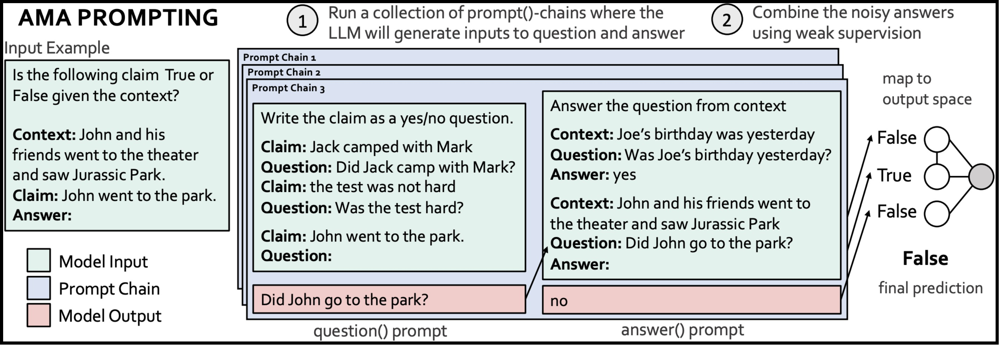
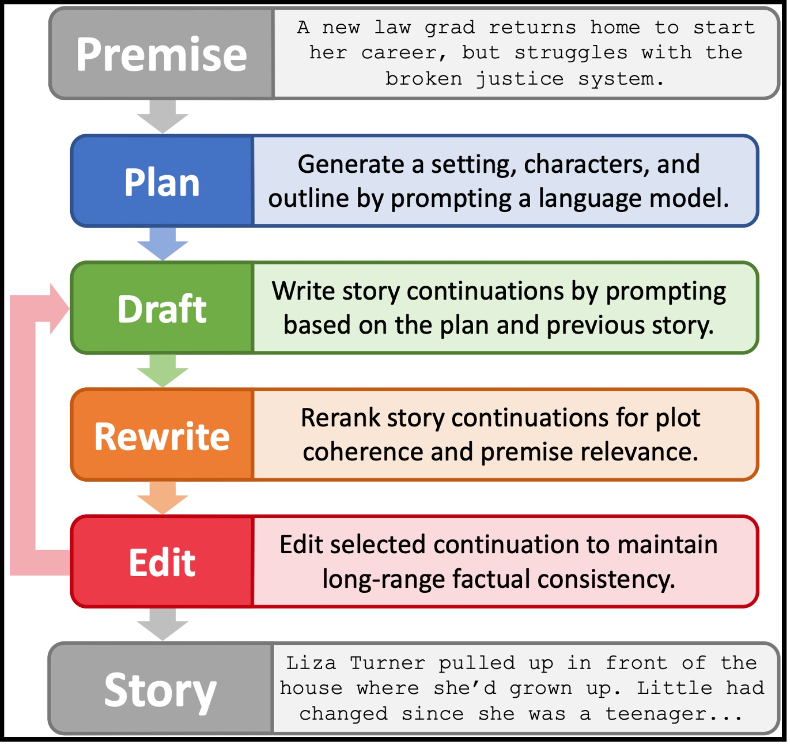
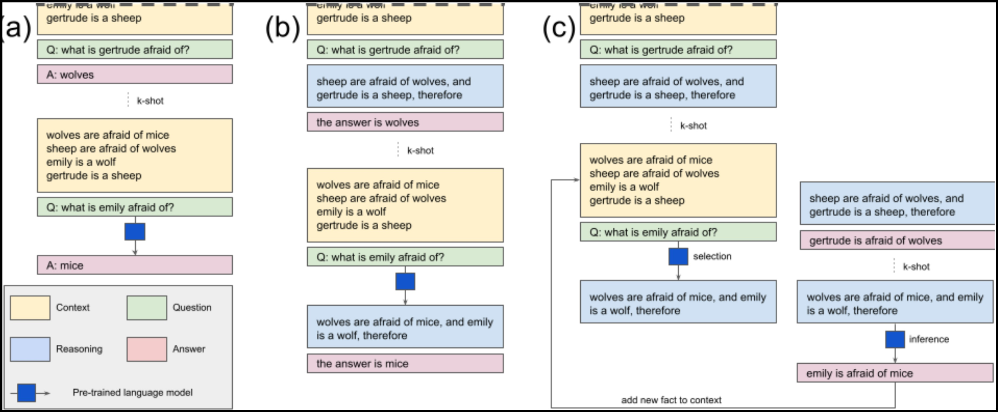
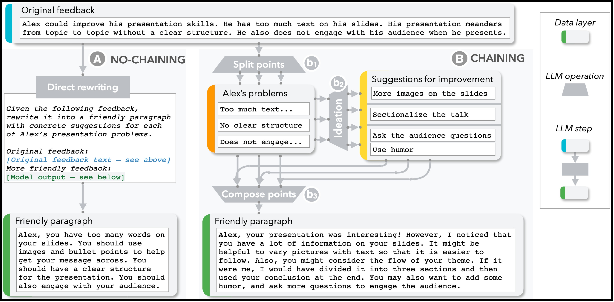
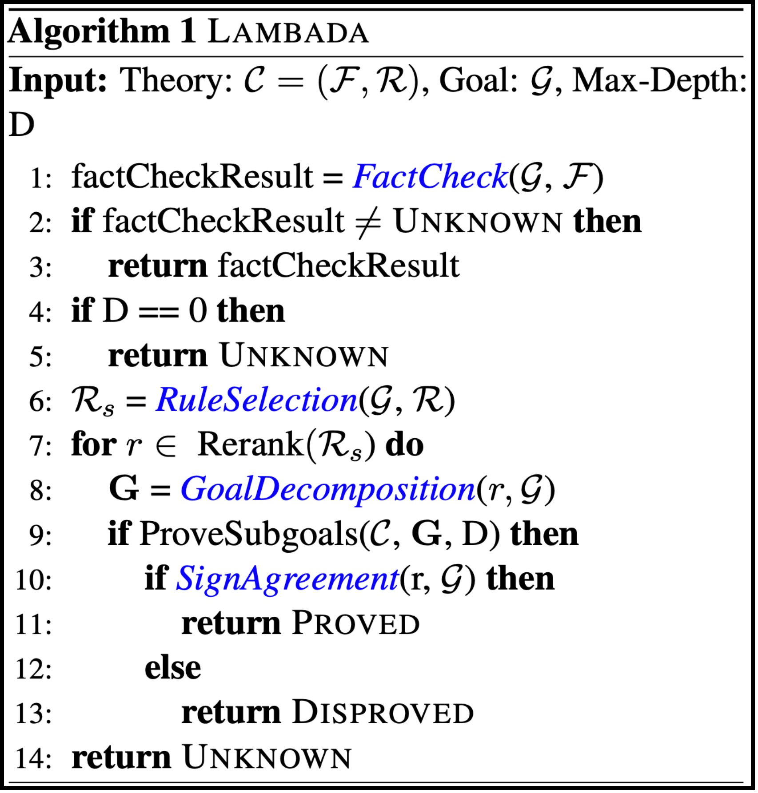
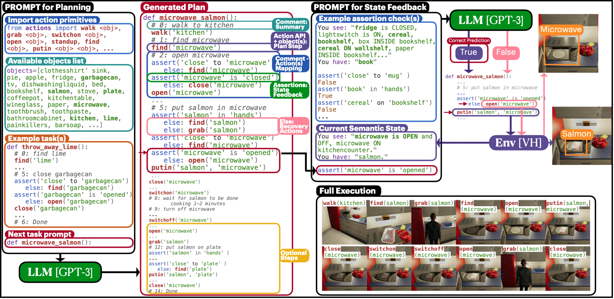
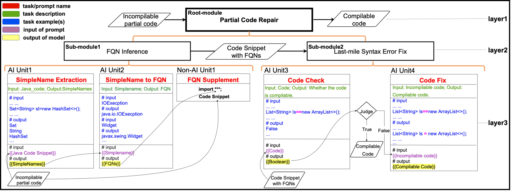
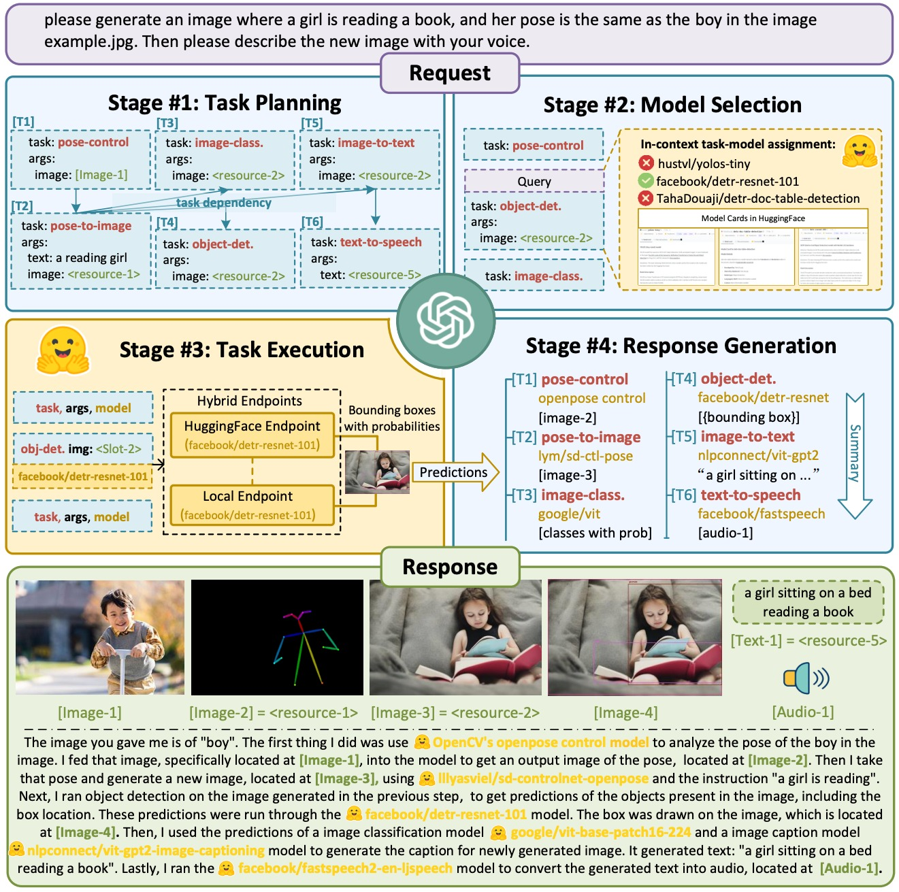

AI Chain Examples
Ask Me Anything: A simple strategy for prompting language models
Ask Me Anything
The research proposes a new method called "ASK ME ANYTHING (AMA)" for generating natural language prompts to train Large Language Models (LLMs) on new tasks. The approach involves producing multiple effective prompts, including question-answering formats, and using weak supervision to combine the noisy predictions. The proposed method shows an average performance lift of 10.2% over the few-shot baseline and enables GPT-J-6B model to outperform few-shot GPT3-175B on 15 of 20 popular benchmarks.
PEER: A Collaborative Language Model

PEER
The research paper introduces PEER, a collaborative language model that imitates the entire writing process, including writing drafts, proposing edits, and providing explanations. It addresses the shortcomings of existing language models in collaborative writing by enabling them to update existing texts, control text generation, and explain their actions. Multiple instances of PEER can infill various parts of the writing process, allowing self-training to increase the quality, amount, and diversity of training data. The model shows strong performance across various domains and editing tasks.
Re3: Generating Longer Stories With Recursive Reprompting and Revision
Re3
The paper proposes a Recursive Reprompting and Revision (Re3) framework for generating long-form stories. Re3 uses a general-purpose language model to create an overarching plan and generate story passages. The passages are then revised for plot coherence and premise relevance, and the best continuation is edited for factual consistency. Compared to similar-length stories generated directly from the same model, Re3's stories were judged to have a more coherent plot and to be more relevant to the initial premise by human evaluators.
Selection-Inference: Exploiting Large Language Models for Interpretable Logical Reasoning
Selection-Inference
This research evaluates the performance of large language models (LLMs) on logical reasoning tasks and proposes a Selection-Inference (SI) framework to improve their ability to solve complex problems. The framework utilizes pre-trained LLMs and alternates between selection and inference to generate a series of interpretable, causal reasoning steps. The proposed SI framework outperforms vanilla baselines and yields a performance improvement of over 100% in a 5-shot generalization setting, even outperforming a larger baseline. Additionally, the framework generates reasoning traces to improve the safety and trustworthiness of the system.
Selection-Inference
This paper proposes Chaining Large Language Model (LLM) steps together as a method to enhance the effectiveness of LLMs on complex tasks, while improving transparency, controllability and sense of collaboration. The authors define a set of LLM primitive operations and present an interactive system where users can modify these chains in a modular way. A user study found that Chaining improved task outcomes, and users developed new ways of interacting with LLMs. The paper presents two case studies to explore how LLM Chains can be used in future applications.
LAMBADA: Backward Chaining for Automated Reasoning in Natural Language
LAMBADA
The paper discusses automated reasoning with natural language texts by using large language models. It introduces a backward chaining algorithm, called LAMBADA, which decomposes reasoning into four sub-modules to efficiently search for proofs. LAMBADA significantly outperforms state-of-the-art forward reasoning methods on two challenging logical reasoning datasets.
ProgPrompt: Generating Situated Robot Task Plans using Large Language Models
ProgPrompt
The paper introduces a method of using large language models (LLMs) to plan robot actions for various tasks in a situated environment. By prompting the LLM with program-like specifications of available actions and objects, and with example programs, the system can generate action sequences that are functional across different environments and robot capabilities. The method achieves state-of-the-art success rates in household tasks and is demonstrated on a physical robot arm for tabletop tasks.
PCR-Chain: Partial Code Reuse Assisted by Hierarchical Chaining of Prompts on Frozen Copilot
PCR_Chain
The research paper proposes PCR-Chain, a method for reusing partial code from API documentation, technical blogs, and programming Q&A sites. PCR-Chain resolves fully qualified names and fixes syntax errors using a pre-trained code model and in-context learning. The paper outlines the underlying prompt architecture and design and demonstrates the high success rate of the method in automatically resolving FQNs and fixing syntax errors in partial code samples.
HuggingGPT: Solving AI Tasks with ChatGPT and its Friends in Hugging Face
HuggingGPT
The paper proposes using large language models (LLMs) as a controller to manage existing AI models in different domains and modalities to solve complicated AI tasks. The proposed framework, HuggingGPT, uses LLMs to conduct task planning, select appropriate AI models, execute subtasks, and summarize responses. HuggingGPT shows impressive results in various challenging tasks, including language, vision, speech, and other modalities, demonstrating the potential of LLMs in advancing artificial intelligence.
Figure~\ref{fig:examples} present examples of AI chains for diverse tasks, such as question answering~\cite{arora2022ask}, content creation~\cite{schick2022peer, yang2022re3, wu2022ai}, logical reasoning~\cite{creswell2022selection, kazemi2022lambada}, robotics~\cite{singh2022progprompt}, and code analysis~\cite{pcrchain}. \begin{itemize}[leftmargin=*] \item Arora et al.~\cite{arora2022ask} (Figure~\ref{fig:examples}(a)) present a strategy for improving question answering by chaining question rewriting, parallel answering, and self-consistency checking units. \item PEER~\cite{schick2022peer} (Figure~\ref{fig:examples}(b)) and Re3~\cite{yang2022re3} (Figure~\ref{fig:examples}(c) decompose content creation as recursive plan, write, revision steps. \item LAMBADA (Figure~\ref{fig:examples}(d)) supports a backward reasoning AI chain algorithm, consisting of four sub-modules - fact check, rule selection, goal decomposition, and sign agreement. \item Wu et al.~\cite{wu2022ai} (Figure~\ref{fig:examples}(e)) design an AI chain for rewriting peer reviews by chaining split-points, ideation, and compose-points steps. They also demonstrate an AI chain for travel flashcard creation through brainstorming, ideation, and translation. \item Selection-Inference~\cite{creswell2022selection} (Figure~\ref{fig:examples}(f)) performs repeated fact selection and inference for interpretable logical reasoning. \item Singh et el.~\cite{singh2022progprompt} ((Figure~\ref{fig:examples}(g)) perform robotics operation by an AI chain of robot task planning, execution and feedback. Similar LLM-based robotics can be found in~\cite{DescribeExplainPlanSelect-https://arxiv.org/pdf/2302.01560.pdf, chatgptforrobotics-https://www.microsoft.com/en-us/research/uploads/prod/2023/02/ChatGPT___Robotics.pdf} \item Huang et al.~\cite{pcrchain} (Figure~\ref{fig:examples}(h)) fix unresolved fully-qualified names and last-mile code errors step by step in partial code. \end{itemize}
In addition to specific tasks, AI chain is a powerful tool for multi-model, tool, or API collaboration to solve complex tasks involving multi-modal subtasks. HuggingGTP~\cite{https://arxiv.org/abs/2303.17580} creates a model collaborative system, in which the LLM coordinates external specialized models to deal with complex AI tasks. In the backend, the LLM runs an AI chain to understand user input, plan task sub-steps, select appropriate external models to execute, and aggregate the results from various models. Similar ideas have been proposed in ChatGPT plugin~\cite{https://openai.com/blog/chatgpt-plugins} and TaskMatrix.AI~\cite{https://arxiv.org/abs/2303.16434}